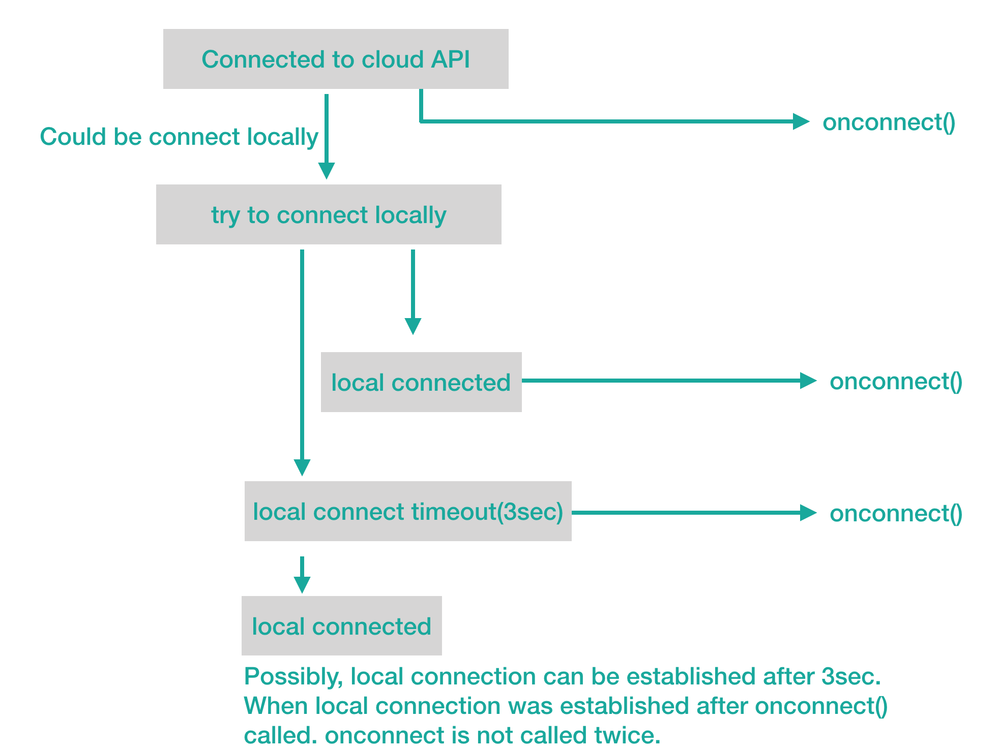

Hierarchy
-
Obniz
- obnizBoard
Index
Constructors
Other Properties
- ad0
- ad1
- ad10
- ad11
- ad2
- ad3
- ad4
- ad5
- ad6
- ad7
- ad8
- ad9
- ble
- connection
State - debugprint
- display
- firmware_
ver - hw
- i2c0
- id
- io0
- io1
- io10
- io11
- io2
- io3
- io4
- io5
- io6
- io7
- io8
- io9
- is
Node - logic
Analyzer - measure
- onclose
- onconnect
- onmessage
- pwm0
- pwm1
- pwm2
- pwm3
- pwm4
- pwm5
- spi0
- spi1
- switch
- uart0
- uart1
Peripherals Properties
Accessors
Methods
- close
- connect
- connect
Wait - getAD
- get
Free I2C - get
Free Pwm - get
Free Spi - get
Free Tcp - get
Free Uart - get
I2CWith Config - getIO
- get
Spi With Config - is
ValidIO - keep
Working AtOffline - message
- ping
Wait - reboot
- repeat
- reset
- reset
OnDisconnect - send
- set
Vcc Gnd - sleep
- sleep
IoTrigger - sleep
Minute - sleep
Seconds - wait
- wired
- Parts
Registrate
Constructors
constructor
-
We will now instantiate obniz.
obniz id is a string. Hyphen '-' is optional, but with just the numbers they can't be accepted.
new Obniz('1234-5678') // OK new Obniz('12345678') // OK new Obniz(12345678) // Can't acceptIf you connect to obniz which has an access token, provide an option like this
new Obniz('1234-5678', {access_token: 'your token here'})If obniz id is incorrect, connection will never be established. In nodejs, an error occurs. In HTML, obniz.js shows a prompt message. The user can put in a correct obniz id into it. It shows up only when the format is invalid. If you specify obniz id which doesn't exist, this would never be shown.

When id is correct, obniz.js will try to connect cloud api and onconnect will be called after connection is established.
When obniz Board and the device running obniz.js is expected to be in the same network, obniz.js will try to establish a direct Websocket connection to obniz Board. This is called "local connect". When local connect is avaiable, obniz Board can be controlled with almost all commands without having to go through the cloud. However, the connection to the cloud never gets disconnected even when using local connect. But when cloud connection gets closed, the local connect also gets closed.

The timing onconnect() gets called depends on the availability of local connect. obniz.js will wait a little to establish connection via local connect as much as possible. See the flow below.

The second parameter when instantiating obniz Board is an option.
Parameters
-
id: string
-
Optional options: ObnizOptions
Returns obnizBoard
-
Other Properties
ad0
ad1
ad10
ad11
ad2
ad3
ad4
ad5
ad6
ad7
ad8
ad9
ble
connectionState
This let you know connection state to your obniz Board as string value.
- 'closed' : not connected.
- 'connecting' : connecting
- 'connected' : connection established
- 'closing' : closing connection.
var obniz = new Obniz('1234-5678');
console.log(obniz.connectionState) // => === "connecting"
obniz.onconnect = async function() {
console.log(obniz.connectionState) // => === "connected"
}debugprint
This lets obniz.js to show logs like communicated jsons and connection logs in console.log.
var obniz = new Obniz('1234-5678');
obniz.debugprint = true
obniz.onconnect = async function() {
obniz.io0.output(true);
}display
Optional firmware_ver
This variable indicate installed firmware version of target device
var obniz = new Obniz('1234-5678');
obniz.debugprint = true
obniz.onconnect = async function() {
console.log(obniz.firmware_ver) // ex. "2.0.0"
}Optional hw
This variable indicate connected hardware identifier of target device
var obniz = new Obniz('1234-5678');
obniz.debugprint = true
obniz.onconnect = async function() {
console.log(obniz.hw) // ex. "obnizb1"
}i2c0
id
obniz id
io0
io1
io10
io11
io2
io3
io4
io5
io6
io7
io8
io9
isNode
Is node.js environment or not.
logicAnalyzer
measure
Optional onclose
onclose will be called when disconnected.
var obniz = new Obniz('1234-5678');
obniz.onconnect = async function() {
}
obniz.onclose = async function() {
}Optional onconnect
Once connection is established, onconnect function will be called.
var obniz = new Obniz('1234-5678');
obniz.onconnect = async function() {
}Operations like turning on/off an io becomes possible only after connection is established, so any operations you want obniz Board to undertake must be written in onconnect
var obniz = new Obniz('1234-5678');
obniz.onconnect = async function() {
obniz.io0.output(true);
}onmessage
Receive message. If you want to send message, see Obniz.message
// Example
obniz.onconnect = function() {
var motor = obniz.wired("ServoMotor", {gnd:0, vcc:1, signal:2});
motor.angle(0);
obniz.onmessage = function(message, from) {
if (message === "pressed") {
motor.angle(85);
}
};
}pwm0
pwm1
pwm2
pwm3
pwm4
pwm5
spi0
spi1
switch
uart0
uart1
Peripherals Properties
Optional io
Accessors
Static api
-
obniz REST api class
Returns ObnizApi
Static version
-
obniz.js version
Returns any
Methods
close
-
This closes the current connection. You need to set auto_connect to false. Otherwise the connection will be recovered.
var obniz = new Obniz('1234-5678', { auto_connect: false, reset_obniz_on_ws_disconnection: false }); obniz.connect(); obniz.onconnect = async function() { obniz.io0.output(true); obniz.close(); }Returns void
connect
-
You can connect to obniz Board manually by calling connect() when auto_connect is set to be false.
var obniz = new Obniz('1234-5678', { auto_connect: false }); obniz.connect(); obniz.onconnect = async function() { obniz.io0.output(true); }Returns void
connectWait
-
With this you wait until the connection to obniz Board succeeds.
var obniz = new Obniz('1234-5678'); await obniz.connectWait(); obniz.io0.output(true); obniz.close();- with timeout
var obniz = new Obniz('1234-5678'); await obniz.connectWait({timeout:10}); //timeout 10sec if(connected){ obniz.io0.output(true); obniz.close(); }- with auto_connect:false
If the param auto_connect is set as false, it will try to connect only once and, if unsuccessful, return false.
var obniz = new Obniz('1234-5678',{auto_connect: false}); var connected = await obniz.connectWait(); //try once if(connected){ obniz.io0.output(true); obniz.close(); }Parameters
-
Optional option: undefined | { timeout?: undefined | number }
Returns Promise<boolean>
False will be returned when connection is not established within a set timeout.
getAD
-
GET AD module from pin no
Parameters
-
io: number
Returns PeripheralAD
-
getFreeI2C
-
It returns unused I2C module.
Returns PeripheralI2C
getFreePwm
-
It returns unused PWM module.
Returns PeripheralPWM
getFreeSpi
-
It returns unused SPI module.
Returns PeripheralSPI
getFreeTcp
-
It returns unused TCP module.
Returns any
getFreeUart
-
It returns unused UART module.
Returns PeripheralUART
getI2CWithConfig
-
It returns setuped I2C module .
Parameters
-
config: any
Returns PeripheralI2C
-
getIO
-
Get IO module from pin no
Parameters
-
io: number
Returns PeripheralIO
-
getSpiWithConfig
-
It returns setuped SPI module.
Parameters
-
config: any
Returns PeripheralSPI
-
isValidIO
-
Check the param is valid io pin no.
Parameters
-
io: any
Returns boolean
-
keepWorkingAtOffline
-
By default, obniz Board resets after disconnection from the cloud. It means the output value and pwm will all stop at that point. But the above function with the argument true can nullify that default setting and change it to "do not reset when offline". This configuration remains as long as obniz Board is on.
// Example obniz.keepWorkingAtOffline(true);Parameters
-
working: any
Returns void
-
message
-
Send message to obniz clients. If you want receive data, see Obniz.onmessage
// Example obniz.onconnect = function(){ var button = obniz.wired("Button", {signal:0, gnd:1}); button.onchange = function(){ var targets = [ "1234-1231", "1234-1232", "1234-1233", "1234-1234", "1234-1235", "1234-1236", "1234-1237", "1234-1238", "1234-1239", "1234-1230"]; obniz.message(targets, "pressed"); }; }Parameters
-
target: string | string[]
destination obniz id
-
message: string
message data
Returns void
-
pingWait
-
Ping to obniz device and wait pong response.
If debugprint option enabled, it display ping/pong response time on console.
await obniz.pingWait(); //waiting pong.Parameters
-
Optional unixtime: undefined | number
start time of measure response time
-
Optional rand: undefined | number
Unique identifier of ping data
-
Optional forceGlobalNetwork: undefined | false | true
Returns Promise<void>
-
reboot
-
reboot device
obniz.reboot();Returns void
repeat
-
Repeat will call the callback function periodically while it is connected to obniz Board. It will stop calling once it is disconnected from obniz Board.
// Javascript Example obniz.ad0.start(); obniz.repeat(function(){ if (obniz.ad0.value > 2.5) { obniz.io0.output(true); } else { obniz.io0.output(false); } }, 100)Parameters
-
callback: any
-
interval: any
default 100. It mean 100ms interval loop.
Returns void
-
reset
-
This forces the obniz Board to go back to the initial state when the power was just turned on.
// Example obniz = new Obniz("1234-5678"); obniz.onconnect = function() { obniz.reset(); }Returns void
resetOnDisconnect
-
This lets you change the setting of
reset_obniz_on_ws_disconnectionafter connection is established.By default, obniz cloud resets target obniz Board when the all websocket to obniz cloud was closed. It means the output value and pwm will all stop at that point. With the above function, you can nullify these resetting activities. This configuration will remain until target obniz Board gets disconnected. Set this function to false to keep working without any of the websocket connections.
// Example obniz.resetOnDisconnect(false);Parameters
-
reset: any
Returns void
-
send
-
Send json/binary data to obniz Cloud or device.
Parameters
-
obj: object | object[]
send data
-
Optional options: undefined | { local_connect?: undefined | false | true }
send option
Returns void
-
setVccGnd
-
Output pin Vcc and Gnd
Parameters
-
vcc: number | null
-
gnd: number | null
-
drive: DriveType
Returns void
-
sleep
-
Action only with obniz Board 1Y.
Obniz Board sleeps for the value specified in Date type. Sleep for up to 45 days (64800 minutes).
// JavaScript example let dt = new Date(); dt.setHours(dt.getHours () + 1,0,0,0); obniz.sleep(dt);Parameters
-
date: Date
Returns void
-
sleepIoTrigger
-
Action only with obniz Board 1Y.
It returns from sleep depending on the pin state of IO0.
// JavaScript example obniz.sleepIoTrigger (true);Parameters
-
trigger: any
- true: Rise （LOW -> HIGH）
- false: Falling （HIGH -> LOW）
Returns void
-
sleepMinute
-
Action only with obniz Board 1Y.
Obniz Board sleeps for the value specified in minutes.
// JavaScript example obniz.sleepMinute （60）; // 60 minutesParameters
-
minute: any
up to 64800 minutes(45 days ).
Returns void
-
sleepSeconds
-
Action only with obniz Board 1Y.
Obniz Board sleeps for the value specified in seconds.
// JavaScript example obniz.sleepSeconds (60); // 60 secondsParameters
-
sec: any
up to 64800 seconds (18 hours).
Returns void
-
wait
-
This pauses obniz Board for a period given in terms of ms (millisecond).
// Javascript Example led.on(); obniz.wait(1000); // led ON 1sec. led.off();This method pauses only obniz Board, not JavaScript.
// Javascript Example var time = new Date(); led.on(); obniz.wait(1000); // led ON 1sec. led.off(); console.log((new Date()).getTime() - time.getTime()) // 0 or very few ms. not 1000ms.However, when you call this method together with the await function, JavaScript will pause for the given period in ms.
// Javascript Example var time = new Date(); led.on(); await obniz.wait(1000); // led ON 1sec. led.off(); console.log((new Date()).getTime() - time.getTime()) // => about 1000Parameters
-
msec: any
Returns Promise<void>
-
wired
-
Setup Parts of parts library
Type parameters
-
K: keyof WiredNameMap
Parameters
-
partsname: K
-
Optional options: WiredNameOptionsMap[K]
Returns WiredNameMap[K]
-
Static PartsRegistrate
-
Register Parts class
Parameters
-
arg0: typeof ObnizPartsInterface
Parts class
-
Optional arg1: any
Returns void
-
obniz Board interface